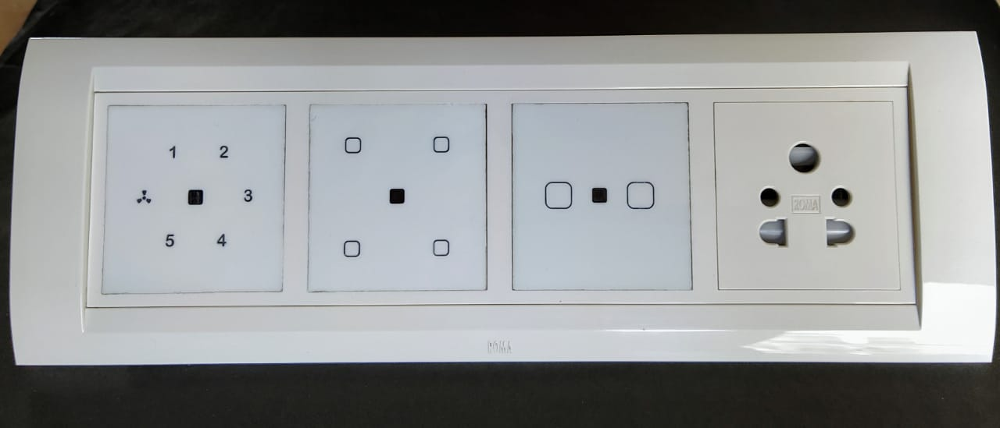
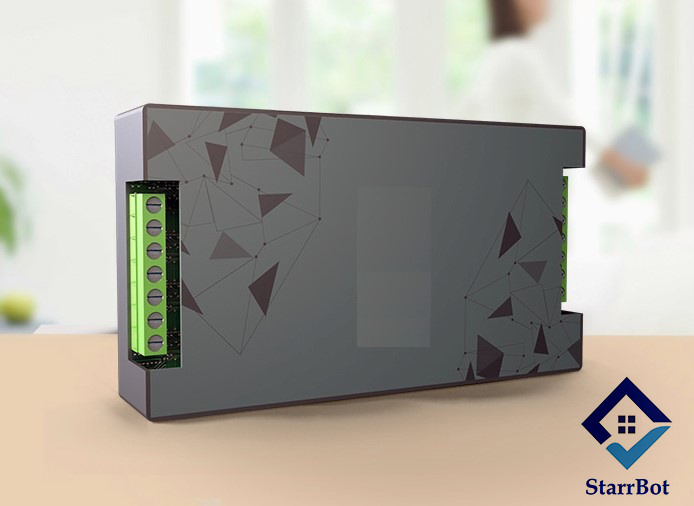
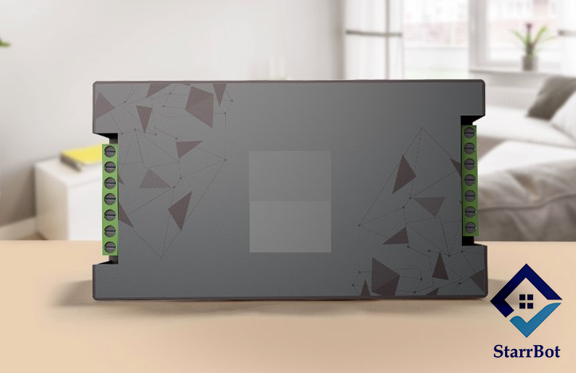
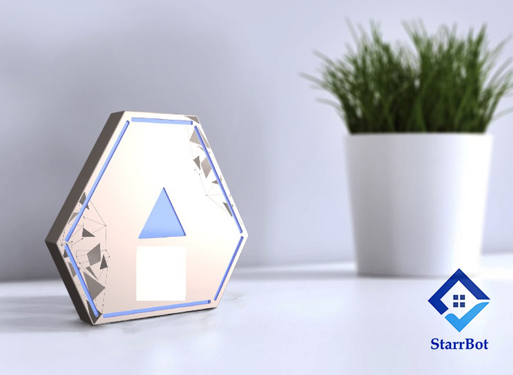
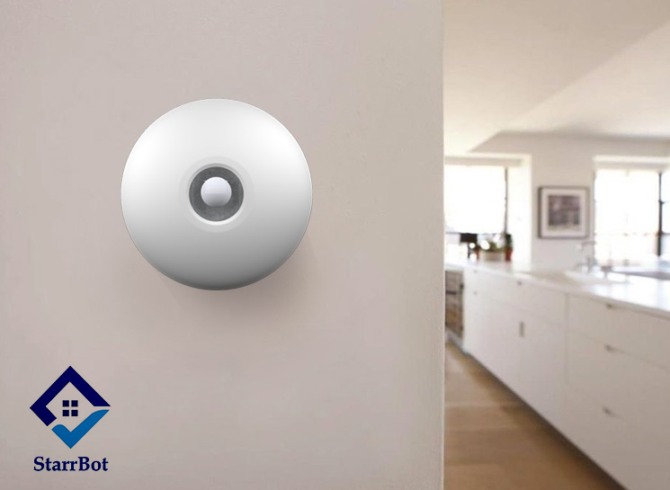
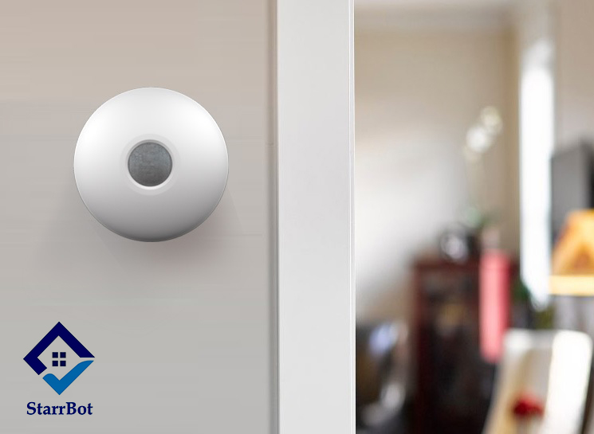
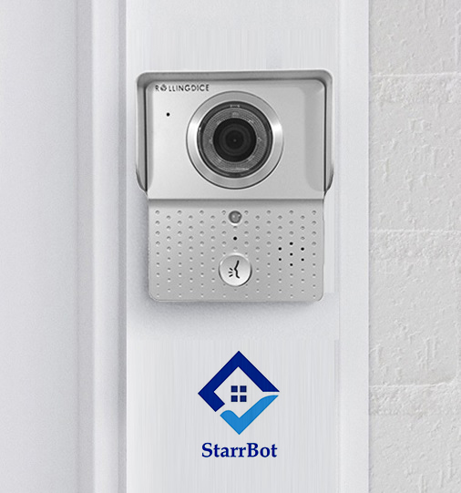
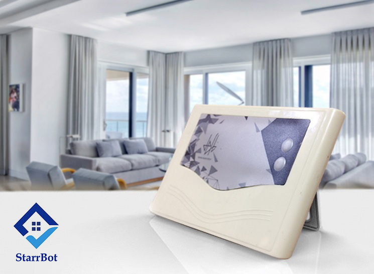
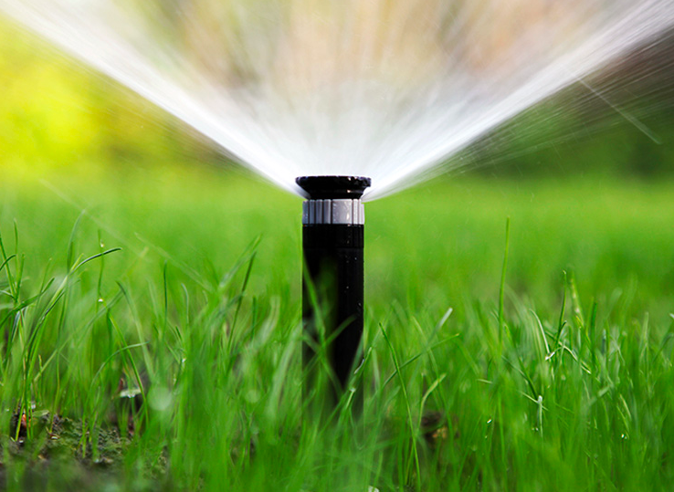
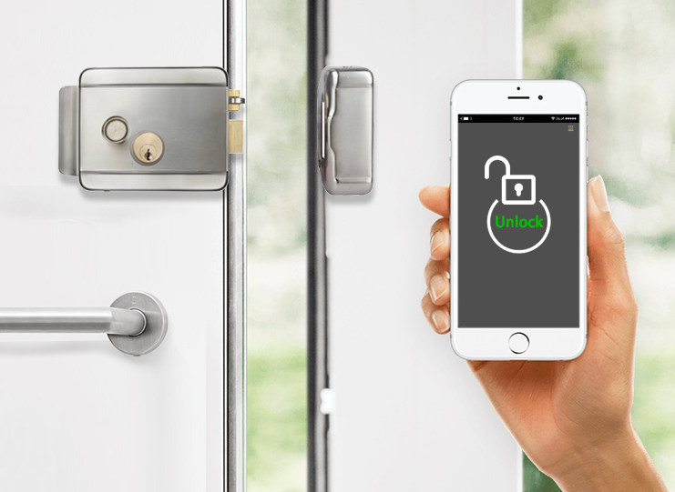

1. Smart Home Automation Tech Switches:
This is a significant element of StarrBot home automation services. This room controller administers all home appliances. It has the ability to be connected to multiple devices at a single time and controls all connected appliances. It also monitors energy consumption for all the appliances, sends the data to the master controller. You can control light, fan, AC & other appliance through:
Mobile App.
Remote
Google or Alexa

Technical Specifications:
Technology(Wireless): Zigbee
Power Rating: 230V/50Hz Single Phase AC Supply
Range: Zigbee (60m with Obstacles, 1200m in Line of Sight)
2. Bot 5 Switches Controller :
This is a significant element of StarrBot home automation services. This room controller administers all home appliances. It has the ability to be connected to multiple devices at a single time and controls all connected appliances. It also monitors energy consumption for all the appliances, sends the data to the master controller. You can control light, fan, AC & other appliance through:
Mobile App.
Google or Alexa.

Technical Specifications:
Technology(Wireless): Zigbee
Power Rating: 230V/50Hz Single Phase AC Supply
Range: Zigbee (60m with Obstacles, 1200m in Line of Sight)
Dimension: 115*60*24 mm
Color: Silver Gray
Weight: 400gm
3. Bot 3 Switches Controller :
This is a significant element of StarrBot home automation services. This room controller administers all home appliances. It has the ability to be connected to multiple devices at a single time and controls all connected appliances. It also monitors energy consumption for all the appliances, sends the data to the master controller. You can control light, fan, AC & other appliance through:
Mobile App.
Google or Alexa.

Technical Specifications:
Technology(Wireless): Zigbee
Power Rating: 230V/50Hz Single Phase AC Supply
Range: Zigbee (60m with Obstacles, 1200m in Line of Sight)
Dimension: 80*65*24 mm
Color: Silver Gray
Weight: 400gm
4. Bot Master Hub :
Bot Master Hub is the brain of home automation solutions. It controls all the Room controllers and appliances that are connected on the StarrBot Network. It enables user to use all the intelligent features using a Tablet Phone, Cell Phone and Smart Sense. It is the Backbone of StarrBot Home Intelligence. It is a mandatory unit which is required to be installed in order to use StarrBot.

Technical Specifications:
Technology (Wireless): Wi-Fi, Zigbee, Bluetooth Low Energy (BLE)
Power Rating: 12V/2A DC Adaptor
Indications: 20x4 LCD display, LED Indication
Range: Wi-Fi, Zigbee (60m with Obstacles, 1200m in Line of Sight)
> Dimension: 210*140*40 mm
Colour: Silver Gray
Weight: 300gm
5. Bot Smart Sensor:
The Smart Sensor is the king of all home automation sensors. It gives access to all the intelligent features.
They are:
1. Light Sensors
Senses the overall light condition of the home and adjusts the ones in the room accordingly.
2. Motion Sensors
Senses the motion in terms of movement registered and works with other sensors to perform the required action. (example. The motion sensor collaborates with the light sensors to switch on or off the lights when you enter or exit to room.
3. Temperature Sensors
Senses the temperature outside the room and adjusts it accordingly in the room, to give that divine comfort.

Technical Specifications:
Technology(Wireless): Zigbee
Power Rating: 230V AC
Indications: LED Indication
Dimension: 47mm Radius 40mm height
Sensor: Light, Motion, Temperature
Range: 12 m
Color: Cream
Weight: 200gm
Features: Energy Saving, Indoor security, Automatic control, Artificial Intelligence supported
6. Bot IR Blaster:
Don't you wish everything could be controlled from your smartphones ? Well it can be. Once the IR blaster is integrated, you can change your TV channels, regulate the AC temperature, change music and more, while sitting on the couch. The IR Blaster, when combined, forms a key component of Bot's home automation services. It will makes everyday cumbersome tasks easy and your life hassle free.

Technical Specifications:
Technology(Wireless): Zigbee
Power Rating: 230V AC
Indications: LED Indication
Dimension: 47mm Radius 40mm height
Sensor: 12 IR LED
Range: 12 Feet
Color: Cream
Weight: 200gm
Features: Energy Saving, Automatic control, Artificial Intelligence supported
7. Bot IP Video Door Camera:
If you wish to have an easy to use home surveillance camera, our IP camera proves to be a great device. It possesses surveillance features, connected to the Tab and gives a video call to the mobile phone and tablet if motion is detected nearby. It is the perfect outdoor home security camera.
The smart feature records any abnormal activity outside your door and immediately sends a distress signal to your smartphone. We believe precaution is better than cure.

Technical Specifications:
Technology (Wireless): Wifi Video Door Phone
Power Rating: 12V/1A DC
Indications: LED Indication, 6Pcs IR night Vision
Dimension: 120*96*35 mm
Sensor: Motion Detector
Range: 1.5 m
Color: Silver Grey
Weight: 200gm
Feature: Support Capturing Photo and Videos
Key Pad: Doorbell
8. Bot Curtain Controller (Motorized Track):
Rolling Curtains can be managed easily by StarrBot’s Curtain Controller. With its motorized features, it controls the curtain operation with help of the motor and passes information to the Master controller and vice versa.
You can now supervise the activity of your curtains with just a touch. Schedule the curtains to slid open and close according to your schedule. No more disturbing your precious sleep!

Technical Specifications:
Technology(Wireless): Zigbee
Power Rating: 230V AC Supply
Indications: LED Indications
Range: Zigbee (60m with Obstacles, 1200m in Line of Sight)
Dimension: 85*70*30mm
Color: Blacks
Weight: 60gm
Key Pad: 2 keys keypad on controller
9. StarrBot Water Sprinkler Controller:
The StarrBot water sprinkler controller is the best sprinkler controller as it will allow you to Control the water flow with just one click! With the help of an electronic valve, it receives and passes information to the Master controller.

Technical Specifications:
Technology (Wireless): Zigbee
Power Rating: 12V/2A DC Adaptor
Indications: LED Indications
Range: Zigbee (60m with Obstacles, 1200m in Line of Sight)
10. StarrBot Smart Door Lock:
StarrBot Smart Door Lock comes with a controlling unit. It enables you to control it from anywhere you are in the world. With just one click, lock or unlock your door. It also gives you the status of your door, whether it's closed or open.

Technical Specifications:
Technology (Wireless): Zigbee
Power Rating: 12V DC
Indications: LED Indications
Range: Zigbee (60m with Obstacles, 1200m in Line of Sight)